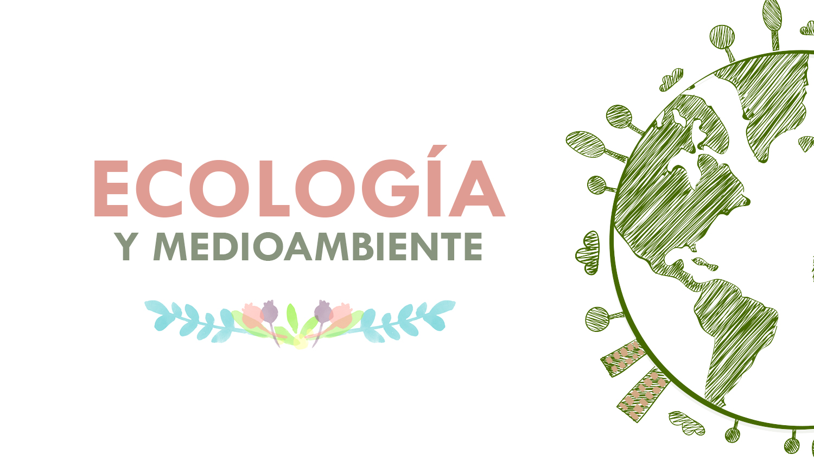

BLOQUE 1: CONOCES LOS NIVELES BASICOS DE LA ECOLOGIA EN SU CONTEXTO

Introduccion
Ecología, estudio de la relación entre los organismos y su medio ambiente físico y biológico.El medio ambiente físico incluye la luz y el caloro radiación solar, la humedad, el viento, el oxígeno, el dióxido de carbono y los nutrientes del suelo, el agua y la atmósfera. El medio ambiente biológico está formado por los organismos vivos, principalmente plantas y animales.
Indice
- La ecología como ciencia integradora y multidisciplinaria
- Factores bióticos y abióticos
- Niveles de organizacion de la materia (químico, celular, tisular, organico, indivividual y ecológico).
- Atributos de una población y una comunidad (crecimiento poblacional y la huella hídrica).
- Factores Limitantes